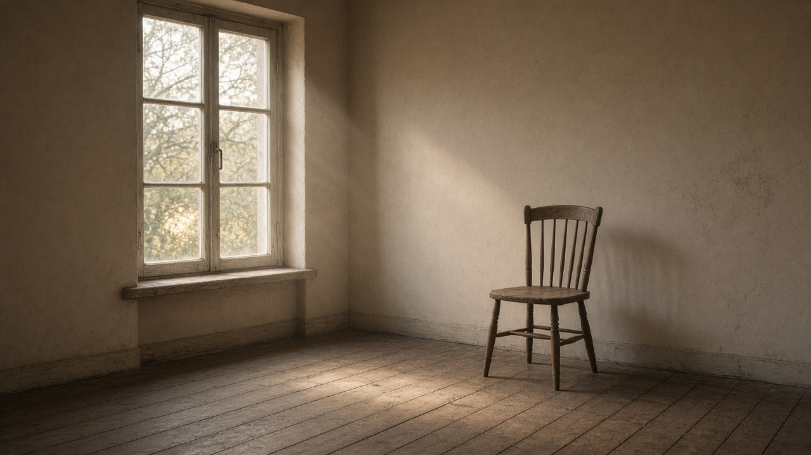

<!DOCTYPE html>
<html lang="ru">
<head>
  <meta charset="UTF-8">
  <meta name="viewport" content="width=device-width, initial-scale=1">
  <title>Какая съёмка тебе нужна</title>
  <link rel="preconnect" href="https://fonts.googleapis.com">
  <link rel="preconnect" href="https://fonts.gstatic.com" crossorigin>
  <link href="https://fonts.googleapis.com/css2?family=Cormorant+Garamond:ital,wght@0,500;0,600;1,500&family=Manrope:wght@400;500;600&display=swap" rel="stylesheet">
  <style>
    :root {
      --ink: #1c140f;
      --muted: #6a584c;
      --paper: #f4efe7;
      --line: rgba(28, 20, 15, 0.12);
    }

    * { box-sizing: border-box; }

    body {
      margin: 0;
      min-height: 100vh;
      color: var(--ink);
      background: #111;
      font-family: Manrope, "Segoe UI", sans-serif;
    }

    .screen {
      display: grid;
      grid-template-columns: minmax(320px, 440px) 1fr;
      height: 100vh;
    }

    .copy {
      display: flex;
      flex-direction: column;
      min-height: 0;
      overflow: auto;
      padding: 36px 36px 28px;
      background: var(--paper);
    }

    .kicker {
      margin: 0 0 28px;
      font-size: 12px;
      letter-spacing: 0.16em;
      text-transform: uppercase;
      color: #9a6a45;
    }

    h1, h2 {
      margin: 0;
      font-family: "Cormorant Garamond", Georgia, serif;
      font-weight: 500;
      line-height: 0.96;
    }

    h1 { font-size: clamp(42px, 5vw, 62px); }
    h2 { font-size: clamp(34px, 4vw, 48px); }

    .lead, .note {
      margin: 16px 0 0;
      color: var(--muted);
      font-size: 16px;
      line-height: 1.5;
    }

    .options {
      display: grid;
      gap: 8px;
      margin-top: 28px;
    }

    button, .file {
      font: inherit;
      cursor: pointer;
    }

    .option, .next, .again, .file {
      border: 0;
      text-align: left;
    }

    .option {
      padding: 14px 14px;
      border-radius: 12px;
      color: var(--ink);
      background: transparent;
      border: 1px solid transparent;
    }

    .option.on, .option:hover {
      background: #fff;
      border-color: var(--line);
    }

    .option b { display: block; font-weight: 600; }
    .option span { display: block; margin-top: 3px; color: var(--muted); font-size: 13px; }

    .next, .again {
      margin-top: auto;
      align-self: flex-start;
      padding: 13px 18px;
      border-radius: 999px;
      color: #f6f1ea;
      background: #1c140f;
    }

    .next:disabled { opacity: 0.35; cursor: default; }

    .stage {
      position: relative;
      min-height: 0;
      height: 100%;
      overflow: hidden;
      background: #2a211b;
    }

    .stage img, .stage .empty {
      position: absolute;
      inset: 0;
      width: 100%;
      height: 100%;
      object-fit: cover;
    }

    .empty {
      display: grid;
      place-items: center;
      color: #eadfd2;
      padding: 32px;
      text-align: center;
      font-family: "Cormorant Garamond", Georgia, serif;
      font-size: 36px;
    }

    .caption {
      position: absolute;
      left: 20px;
      right: 20px;
      bottom: 20px;
      max-width: 420px;
      padding: 14px 16px;
      color: #f6f1ea;
      background: rgba(20, 14, 10, 0.62);
      backdrop-filter: blur(8px);
      border-radius: 12px;
      line-height: 1.4;
    }

    .result-photos {
      display: grid;
      grid-template-columns: 1.4fr 1fr;
      gap: 8px;
      height: 100%;
    }

    .result-photos img { position: static; height: 100%; }

    .stack { display: grid; gap: 8px; }
    .stack img { height: calc(50% - 4px); }

    .brief { margin-top: 22px; }
    .brief p { margin: 0 0 10px; line-height: 1.45; }
    .brief strong { font-family: "Cormorant Garamond", Georgia, serif; font-size: 28px; font-weight: 500; }

    .file {
      display: inline-block;
      margin-top: 8px;
      padding: 12px 14px;
      border-radius: 12px;
      background: #fff;
      border: 1px dashed #c8b8a6;
    }

    input[type="file"] { display: none; }

    @media (max-width: 860px) {
      .screen { grid-template-columns: 1fr; height: auto; }
      .stage { min-height: 46vh; height: 46vh; order: -1; }
      .copy { padding: 24px 20px 32px; }
    }
  </style>
</head>
<body>
  <div id="app"></div>
  <script>
    const questions = [
      {
        kicker: "Вопрос 1 из 4",
        title: "Что ты хочешь унести с собой?",
        options: [
          {
            id: "one",
            label: "Один кадр на стену",
            hint: "Не сто почти одинаковых",
            image: "photos/ref-portrait.jpg",
            caption: "Тогда мы не ищем удачный дубль. Ищем один кадр, который можно оставить.",
            shoot: "Ищем один кадр, а не серию «на всякий случай».",
            deliver: "На выходе один отпечаток, который не стыдно повесить."
          },
          {
            id: "story",
            label: "Историю, которую можно перечитывать",
            hint: "Несколько кадров, у них есть порядок",
            image: "photos/ref-couple.jpg",
            caption: "Тогда это не открытка. Кадры идут друг за другом, как короткая запись.",
            shoot: "Снимаем короткую последовательность: приход, жест, деталь, уход.",
            deliver: "На выходе серия из 12–20 кадров в одном порядке."
          },
          {
            id: "work",
            label: "Чтобы было понятно, чем я занимаюсь",
            hint: "Не обложка, а доказательство",
            image: "photos/ref-hands.jpg",
            caption: "Тогда герой не улыбка. Герой — руки, место и то, как устроена работа.",
            shoot: "Снимаем работу в процессе, не постановочный портрет у стены.",
            deliver: "На выходе набор, которым можно показать дело без длинного объяснения."
          }
        ]
      },
      {
        kicker: "Вопрос 2 из 4",
        title: "Где ты перестаёшь позировать?",
        options: [
          {
            id: "home",
            label: "Дома",
            hint: "Кухня, окно, свой свет",
            image: "photos/ref-home.jpg",
            caption: "Дома камера мешает меньше, если не переставлять жизнь ради кадра.",
            place: "Съёмка у тебя дома. Ничего не привозим «для красоты».",
            title: "дома"
          },
          {
            id: "street",
            label: "На улице, в движении",
            hint: "Пока не надо останавливаться",
            image: "photos/ref-street.jpg",
            caption: "На улице кадр случается между шагами. Позу почти не ставим.",
            place: "Идём по твоим улицам и снимаем на ходу.",
            title: "на ходу"
          },
          {
            id: "place",
            label: "В месте, которое уже моё",
            hint: "Мастерская, кафе, двор, цех",
            image: "photos/ref-cafe.jpg",
            caption: "Чужой интерьер здесь не нужен. Место уже говорит за тебя.",
            place: "Приходим в твоё место и снимаем его таким, какое оно есть.",
            title: "в твоём месте"
          }
        ]
      },
      {
        kicker: "Вопрос 3 из 4",
        title: "На каком расстоянии тебе спокойно?",
        options: [
          {
            id: "close",
            label: "Совсем близко",
            hint: "Руки, взгляд, ткань",
            image: "photos/ref-close.jpg",
            caption: "Близко значит: меньше человека в полный рост, больше того, что обычно обрезают.",
            distance: "Камера близко: взгляд, руки, фактура."
          },
          {
            id: "talk",
            label: "На расстоянии разговора",
            hint: "Как если бы мы просто говорили",
            image: "photos/ref-portrait.jpg",
            caption: "Это дистанция, на которой ещё можно разговаривать и не играть в модель.",
            distance: "Камера на расстоянии разговора, без постановки позы."
          },
          {
            id: "far",
            label: "Далеко, внутри места",
            hint: "Человек меньше кадра, место больше",
            image: "photos/ref-wide.jpg",
            caption: "Дальняя дистанция оставляет воздух. Человек не обязан заполнять кадр.",
            distance: "Человек внутри места, а не на переднем плане."
          }
        ]
      },
      {
        kicker: "Вопрос 4 из 4",
        title: "Чего на этих фото быть не должно?",
        options: [
          {
            id: "smile",
            label: "Улыбки по команде",
            hint: "Если улыбка будет, то сама",
            image: "photos/ref-portrait.jpg",
            caption: "Не просим улыбнуться. Если улыбка случится, она останется.",
            avoid: "Не будет команды «улыбнись»."
          },
          {
            id: "perfect",
            label: "Идеальной одежды и причёски",
            hint: "Как есть в этот день",
            image: "photos/ref-home.jpg",
            caption: "Образ не собираем заранее. Снимаем тот день, который уже идёт.",
            avoid: "Не будет подготовки «как на обложку»."
          },
          {
            id: "decor",
            label: "Чужого красивого фона",
            hint: "Никаких декораций ради кадра",
            image: "photos/ref-room.jpg",
            caption: "Фон не выбираем по красоте. Он должен быть твоим.",
            avoid: "Не будем искать декорацию, которая ничего про тебя не говорит."
          }
        ]
      }
    ];

    const titles = {
      "one-home": "Один кадр дома, без зрителей",
      "one-street": "Один точный кадр на ходу",
      "one-place": "Один кадр в твоём месте",
      "story-home": "Короткая история на твоей кухне",
      "story-street": "Прогулка, которую не останавливают ради позы",
      "story-place": "История твоего места",
      "work-home": "Как выглядит дело, когда никто не позирует",
      "work-street": "Дело, вынесенное на улицу",
      "work-place": "Доказательство: место, руки, свет"
    };

    const app = document.querySelector("#app");
    const picks = [];
    let selected = 0;
    let ownPhoto = "";

    function screen(html) {
      app.innerHTML = `<div class="screen">${html}</div>`;
    }

    function intro() {
      screen(`
        <section class="copy">
          <p class="kicker">Съёмка без портфолио</p>
          <h1>Сначала поймём, какой кадр тебе нужен.</h1>
          <p class="lead">Четыре вопроса. На каждый — картинка и то, как из этого складывается съёмка. В конце можно приложить своё фото.</p>
          <button class="next" type="button" id="start">Смотреть первый вариант</button>
        </section>
        <section class="stage">
          
          <div class="caption">Не примеры работ. Это направление: как может выглядеть твоя съёмка.</div>
        </section>
      `);
      document.querySelector("#start").onclick = () => ask(0);
    }

    function ask(index) {
      const q = questions[index];
      selected = picks[index] ? q.options.findIndex((item) => item.id === picks[index].id) : 0;
      if (selected < 0) selected = 0;
      draw(index);
    }

    function draw(index) {
      const q = questions[index];
      const option = q.options[selected];
      screen(`
        <section class="copy">
          <p class="kicker">${q.kicker}</p>
          <h2>${q.title}</h2>
          <div class="options">
            ${q.options.map((item, i) => `
              <button class="option ${i === selected ? "on" : ""}" type="button" data-i="${i}">
                <b>${item.label}</b>
                <span>${item.hint}</span>
              </button>
            `).join("")}
          </div>
          <button class="next" type="button" id="next">${index === questions.length - 1 ? "Собрать направление" : "Дальше"}</button>
        </section>
        <section class="stage">
          
          <div class="caption">${option.caption}</div>
        </section>
      `);
      app.querySelectorAll(".option").forEach((button) => {
        button.onclick = () => {
          selected = Number(button.dataset.i);
          draw(index);
        };
      });
      document.querySelector("#next").onclick = () => {
        picks[index] = q.options[selected];
        if (index + 1 < questions.length) ask(index + 1);
        else photoStep();
      };
    }

    function photoStep() {
      const cover = picks[0].image;
      screen(`
        <section class="copy">
          <p class="kicker">Если хочешь точнее</p>
          <h2>Есть фото, на которое хочется равняться?</h2>
          <p class="lead">Своё или пропусти. Чужие примеры выше уже задали направление. Свой кадр просто говорит, какой свет и близость тебе уже нравятся.</p>
          <label class="file">Прикрепить своё фото<input id="file" type="file" accept="image/*"></label>
          <button class="next" type="button" id="skip">Показать направление</button>
        </section>
        <section class="stage">
          
          <div class="caption" id="preview-caption">${ownPhoto ? "Твой кадр станет обложкой направления." : "Пока здесь первый выбранный ориентир."}</div>
        </section>
      `);
      document.querySelector("#file").onchange = (event) => {
        const file = event.target.files[0];
        if (!file) return;
        const reader = new FileReader();
        reader.onload = () => {
          ownPhoto = reader.result;
          document.querySelector("#preview").src = ownPhoto;
          document.querySelector("#preview-caption").textContent = "Твой кадр станет обложкой направления.";
        };
        reader.readAsDataURL(file);
      };
      document.querySelector("#skip").onclick = finish;
    }

    function finish() {
      const [why, where, distance, avoid] = picks;
      const title = titles[`${why.id}-${where.id}`];
      const second = where.image;
      const third = distance.image;
      const cover = ownPhoto || why.image;
      screen(`
        <section class="copy">
          <p class="kicker">Твоё направление</p>
          <div class="brief">
            <p><strong>${title}</strong></p>
            <p>${where.place}</p>
            <p>${why.shoot} ${distance.distance}</p>
            <p>${avoid.avoid}</p>
            <p>${why.deliver}</p>
          </div>
          <button class="again" type="button" id="again">Собрать другое</button>
        </section>
        <section class="stage">
          <div class="result-photos">
            
            <div class="stack">
              
              
            </div>
          </div>
        </section>
      `);
      document.querySelector("#again").onclick = () => {
        picks.length = 0;
        ownPhoto = "";
        intro();
      };
    }

    intro();
  </script>
</body>
</html>
